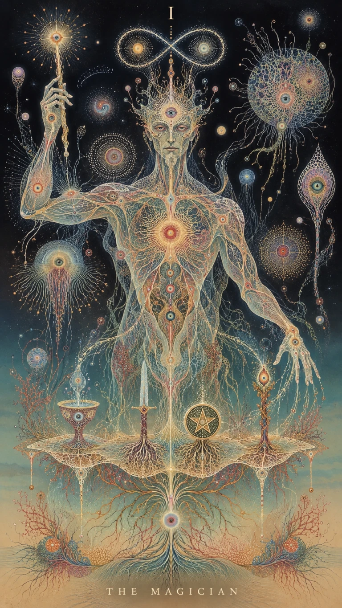
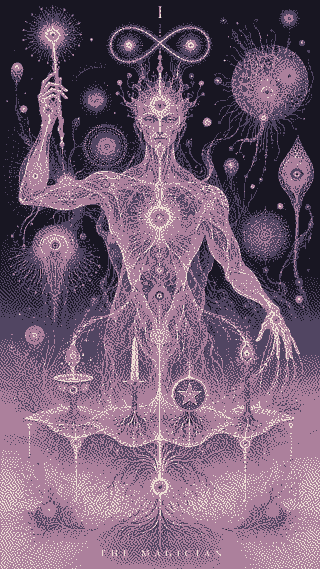

01 / THE PHOTOGRAPH
Photos can blend.
A photograph contains many shades. The browser can blend neighboring pixels as it scales the image, usually without an obvious change in character.
THE DETAILS ARE IN THE DOTS.
A dithered image is a carefully placed pattern.
When its size changes, the pattern should change with it.
Drag the slider or resize your window.
Watch the texture, especially in the midtones.
Full-color image

Original source
Rebuilt for this width
Preparing pixels…
One fixed dot pattern

320 px export
Preparing the comparison…
Both dithered views use Atkinson, the selected palette, and the same tone settings. The right-hand image is a real 320-pixel-wide PNG made ahead of time. Only the middle image runs dither·to when you resize.
01 / THE PHOTOGRAPH
A photograph contains many shades. The browser can blend neighboring pixels as it scales the image, usually without an obvious change in character.
02 / THE PATTERN
Dithering uses the placement of a small set of colors to suggest more shades. dither·to resizes the original first, then builds a new pattern for the displayed width. Crisp pixel rendering keeps those palette colors distinct.
03 / THE RESIZE
A fixed export keeps the same dots at every size. At fractional scales, ordinary image smoothing can blend them into intermediate colors, soften the texture, or create uneven patterns. At its intended size, the export can look right too.
image-rendering: pixelated?Try the checkbox above. It preserves hard color edges, but enlarges or shrinks the existing pattern. Rendering again lets the pattern adapt to the new image size. A fixed export is still useful when you control its final dimensions.
This demo builds one image pixel per CSS pixel of width. Screen density and browser zoom affect how that grid maps to physical pixels; it does not claim one dot per device pixel.
KEEP THE ORIGINAL. REBUILD THE TEXTURE.